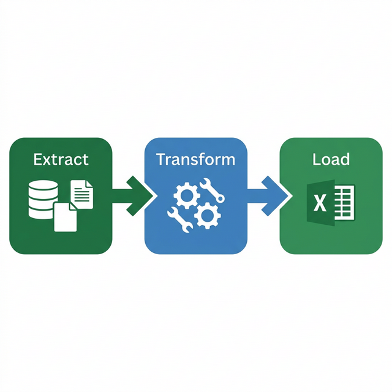

Tổng quan về Power Query
Hiểu rõ Power Query là gì, vai trò trong quy trình xử lý dữ liệu ETL, lợi ích vượt trội và làm quen với giao diện Power Query Editor.
1.1 Power Query là gì?
Power Query là một công cụ mạnh mẽ được tích hợp trong Microsoft Excel và Power BI, giúp người dùng thu thập, kết nối, chuyển đổi và làm sạch dữ liệu từ nhiều nguồn khác nhau một cách hiệu quả.
Power Query được Microsoft giới thiệu lần đầu vào năm 2013 dưới dạng add-in cho Excel 2010 và 2013. Từ phiên bản Excel 2016 trở đi, Power Query đã được tích hợp sẵn với tên gọi "Get & Transform Data" trong tab Data.
Đặc điểm nổi bật của Power Query
- ✓ Không cần viết code: Giao diện trực quan, kéo-thả, phù hợp mọi trình độ
- ✓ Kết nối đa nguồn: Excel, CSV, SQL, Web, SharePoint, JSON, PDF...
- ✓ Tự động hóa: Lưu lại các bước xử lý, chỉ cần Refresh để cập nhật
- ✓ Xử lý dữ liệu lớn: Hiệu suất cao với hàng triệu dòng dữ liệu
- ✓ Ngôn ngữ M: Hỗ trợ ngôn ngữ lập trình M cho xử lý nâng cao
- ✓ Tích hợp Excel: Kết quả được load trực tiếp vào Excel worksheet
1.2 Quy trình ETL (Extract – Transform – Load)
Power Query hoạt động theo quy trình ETL — ba bước cơ bản trong xử lý dữ liệu:

Extract (Trích xuất)
Kết nối và lấy dữ liệu từ các nguồn như file Excel, CSV, cơ sở dữ liệu SQL, trang web, API, SharePoint, và nhiều nguồn khác.
Transform (Chuyển đổi)
Làm sạch, lọc, tách/gộp cột, thay đổi kiểu dữ liệu, pivot/unpivot, tính toán và biến đổi dữ liệu theo yêu cầu.
Load (Tải)
Đưa dữ liệu đã xử lý vào Excel worksheet, Data Model, hoặc chỉ tạo connection để sử dụng sau.
1.3 Lợi ích của Power Query
Tiết kiệm thời gian
Tự động hóa các công việc lặp đi lặp lại, chỉ cần Refresh để cập nhật dữ liệu mới.
Giảm thiểu sai sót
Loại bỏ lỗi thủ công khi copy-paste, đảm bảo dữ liệu nhất quán.
Kết nối đa nguồn
Tổng hợp dữ liệu từ nhiều file, database, web trong một quy trình duy nhất.
Dữ liệu sạch
Chuẩn hóa, làm sạch dữ liệu trước khi phân tích, tạo báo cáo chính xác.
1.4 So sánh Power Query với các phương pháp khác
| Tiêu chí | Thủ công (Copy-Paste) | VBA Macro | Power Query |
|---|---|---|---|
| Độ khó | Dễ | Khó (cần lập trình) | Trung bình (giao diện trực quan) |
| Tự động hóa | ❌ Không | ✅ Có | ✅ Có (Refresh) |
| Kết nối đa nguồn | ❌ Hạn chế | ⚠️ Phức tạp | ✅ Dễ dàng |
| Xử lý dữ liệu lớn | ❌ Chậm | ⚠️ Trung bình | ✅ Nhanh |
| Bảo trì | ❌ Khó | ⚠️ Cần chuyên gia | ✅ Dễ (Applied Steps) |
| Đường cong học tập | Thấp | Cao | Trung bình |
1.5 Giao diện Power Query Editor
Power Query Editor là môi trường làm việc chính, nơi bạn thực hiện mọi thao tác chuyển đổi dữ liệu. Giao diện gồm các thành phần chính:

Các thành phần chính
- Ribbon (Thanh công cụ): Chứa các tab Home, Transform, Add Column, View với đầy đủ công cụ xử lý dữ liệu.
- Queries Panel (Bảng truy vấn): Hiển thị danh sách tất cả queries trong workbook, cho phép quản lý và tổ chức.
- Data Preview (Xem trước dữ liệu): Hiển thị dữ liệu dạng bảng, cho phép tương tác trực tiếp như lọc, sắp xếp.
- Applied Steps (Các bước đã áp dụng): Danh sách các bước xử lý theo thứ tự, có thể chỉnh sửa, xóa hoặc thêm bước mới.
- Formula Bar (Thanh công thức): Hiển thị công thức M tương ứng với bước đang chọn.
Các Tab chính trong Ribbon
| Tab | Chức năng chính |
|---|---|
| Home | Close & Load, Refresh, Manage Columns, Reduce Rows, Sort, Split Column, Merge/Append Queries |
| Transform | Data Type, Replace Values, Transpose, Pivot/Unpivot, Group By, Fill, Move Column |
| Add Column | Custom Column, Conditional Column, Index Column, Column from Examples |
| View | Formula Bar, Column Profile, Column Quality, Column Distribution |
1.6 Query Settings Panel
Bên phải Power Query Editor có panel Query Settings, chứa hai phần quan trọng:
Properties
- Name: Tên query — nên đặt tên rõ ràng, mô tả nội dung (ví dụ: "DonHang_2024" thay vì "Query1")
- All Properties: Thêm mô tả (Description) cho query, giúp quản lý khi có nhiều queries
Applied Steps
Danh sách các bước xử lý theo thứ tự. Mỗi bước tương ứng với một dòng code M:
- Nhấp vào bước → xem kết quả tại bước đó
- Right-click → Rename để đặt tên bước có ý nghĩa
- Right-click → Insert Step After để thêm bước mới
- Right-click → Move Up/Down để thay đổi thứ tự
- Nhấn ❌ để xóa bước
1.7 Privacy Levels (Mức độ riêng tư)
Khi kết hợp dữ liệu từ nhiều nguồn, Power Query yêu cầu bạn thiết lập Privacy Level để đảm bảo an toàn dữ liệu:
| Privacy Level | Mô tả | Ví dụ |
|---|---|---|
| Private | Nguồn dữ liệu nhạy cảm, không được chia sẻ với nguồn khác | Database nội bộ, file lương nhân viên |
| Organizational | Dữ liệu chia sẻ trong tổ chức, có thể kết hợp với nhau | SharePoint, file trên server công ty |
| Public | Dữ liệu công khai, ai cũng có thể truy cập | Dữ liệu từ web, API công khai |
| None | Không xác định — có thể gây cảnh báo khi kết hợp | Nguồn chưa được phân loại |
Thiết lập: File → Options → Query Options → Privacy → chọn "Always ignore Privacy Level settings" (cho môi trường phát triển) hoặc cấu hình từng Data Source.
1.8 Query Folding (Gấp truy vấn)
Query Folding là khả năng Power Query chuyển các bước xử lý thành native query (ví dụ: SQL) để thực thi trực tiếp trên nguồn dữ liệu, thay vì tải toàn bộ dữ liệu rồi xử lý cục bộ.
Có Query Folding
Bước xử lý được đẩy về server → chỉ trả về kết quả → nhanh, tiết kiệm tài nguyên
Không Query Folding
Toàn bộ dữ liệu tải về máy → xử lý cục bộ → chậm với dữ liệu lớn
Kiểm tra Query Folding
- Right-click vào bất kỳ bước nào trong Applied Steps
- Nếu thấy "View Native Query" → bước đó được fold ✅
- Nếu option bị mờ (grayed out) → bước đó KHÔNG fold ❌
1.7 Thinking Like a Database (Tư duy dữ liệu)
Trước khi sử dụng Power Query hiệu quả, cần hiểu tư duy cơ sở dữ liệu — cách tổ chức dữ liệu tối ưu:
Flat Table vs Star Schema
| Tiêu chí | Flat Table (bảng phẳng) | Star Schema (mô hình sao) |
|---|---|---|
| Cấu trúc | 1 bảng duy nhất chứa tất cả | 1 bảng Fact + nhiều bảng Dimension |
| Dữ liệu trùng | Rất nhiều (lặp tên SP, KH...) | Tối thiểu (dùng mã tham chiếu) |
| Dung lượng | Lớn | Nhỏ hơn nhiều |
| Bảo trì | Khó (sửa 1 chỗ, phải sửa nhiều dòng) | Dễ (sửa 1 lần trong Dimension) |
| Khi nào dùng | Dữ liệu nhỏ, đơn giản | Dữ liệu lớn, phân tích chuyên sâu |
Fact Table vs Dimension Table
- Fact Table (Bảng sự kiện): Chứa dữ liệu giao dịch, đo lường — VD: DonHang (MaDH, MaSP, MaKH, SoLuong, NgayDat)
- Dimension Table (Bảng chiều): Chứa thông tin mô tả — VD: SanPham (MaSP, TenSP, DanhMuc, DonGia), KhachHang (MaKH, HoTen, DiaChi)
Bài tập 1.1: Khám phá giao diện Power Query Editor
Mục tiêu: Làm quen với giao diện Power Query Editor
- Mở Excel, tạo một bảng dữ liệu đơn giản với các cột: Họ tên, Tuổi, Thành phố, Lương (nhập 5-10 dòng dữ liệu)
- Chọn toàn bộ bảng dữ liệu → vào tab Data → chọn From Table/Range
- Quan sát Power Query Editor mở ra, xác định:
- Queries Panel ở bên trái
- Data Preview ở giữa
- Applied Steps ở bên phải
- Formula Bar ở phía trên
- Thử nhấp vào từng tab: Home, Transform, Add Column, View để xem các công cụ
- Nhấp vào nút dropdown trên tiêu đề cột "Thành phố" để thử tính năng lọc
- Chọn Close & Load để đóng Editor và tải dữ liệu về Excel
Bài tập 1.2: Tìm hiểu Applied Steps
Mục tiêu: Hiểu cách Applied Steps hoạt động
- Mở lại Power Query Editor (double-click vào bảng query trong Excel)
- Quan sát panel Applied Steps bên phải — ghi nhận các bước đã có
- Thực hiện: Lọc cột "Tuổi" > 25
- Thực hiện: Sắp xếp cột "Lương" giảm dần
- Quan sát thấy 2 bước mới xuất hiện trong Applied Steps
- Nhấp vào bước đầu tiên (Source) để xem dữ liệu gốc
- Nhấp vào bước cuối cùng để xem kết quả cuối cùng
- Thử xóa bước "Sorted Rows" bằng cách nhấp chuột phải → Delete
- Chọn Close & Load